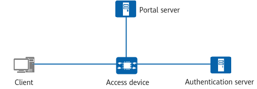

Definition
Portal authentication is also called web authentication. Portal authentication websites are often referred to as web portals. When accessing the network, a user must be authenticated on the web portal. If the user fails the authentication, the user can access only specified network resources. The user can access other network resources only after passing the authentication.
Authentication System
The Portal authentication system primarily consists of four components: client, access device, Portal server, and authentication server, as shown in Figure 1.
Figure 1 Portal authentication system
- Client: a host that has a browser running Hypertext Transfer Protocol (HTTP) or Hypertext Transfer Protocol Secure (HTTPS) installed.
- Access device: a network device such as a switch or router, which provides the following functions:
- Redirects all HTTP and HTTPS requests of users on authentication network segments to the Portal server before authentication is performed.
- Interacts with the Portal server and authentication server to implement user identity authentication, authorization, and accounting during authentication.
- Grants users access to the network resources authorized by the administrator upon successful authentication.
- Portal server: a server that receives authentication requests from clients, provides Portal services and authentication pages, and exchanges client authentication information with access devices.
- Authentication server: interacts with access devices to implement user authentication, authorization, and accounting.